THE DESIGN INVESTIGATION · PHASE I
Reimagining the Hotel Arrival Experience¶
Acknowledgements¶
We would like to express our utmost gratitude to Dr Elliot Law and Mr Graham Zhu for their guidance, support and encouragement through the course of this project thus far. Their weekly check-ins gave us direction and valuable feedback when deciding our next steps or where to improve. The advice and experience they shared helped us greatly in refining the project scope and designing the prototype's contents.
We would also like to extend our thanks to all the hotels that worked with us, in particular Mr Michael Lee from Ascott and Mr Sherwin Poh from The Ridge at NUS, for making the time to share more about their experiences and challenges faced. Adopting and implementing new technology into their hotels can be an arduous process and we are grateful for their willingness to explain what the process requires and to go into detail on considerations made.
1. Introduction¶
Background¶
This project is hosted by CDE4301 Innovation and Design Capstone at the National University of Singapore (NUS), conducted as part of the Stanford Global Engineering Design Innovation (GEDI) programme AY2026/27. The project collaborates with The Ascott Limited as industry partner and problem owner.
We started off with a challenge, deliberately open to solutions:
How can we reimagine the hotel arrival experience with AI and Emerging Technologies?
The theme of Invisible Hospitality carries the notion that good service is so seamless that guests barely notice. The routine parts of arrival (confirming who they are, paying, getting into the room) should happen smoothly in the background, rendering staff able to offer the personal touch that guests actually remember.
The project runs in two phases. Phase I (this report) covers preliminary research, ground work investigation, and the first prototype. Phase II continues the work with Stanford's ME310 course, with students from both universities and industry partners working together over three sprints: understanding the problem space, prototyping in several directions, and refining a final integrated prototype. The collaboration brings together Stanford ME310 students, NUS CDE4301 students, Ascott as the problem owner, and Venture as a solution provider.
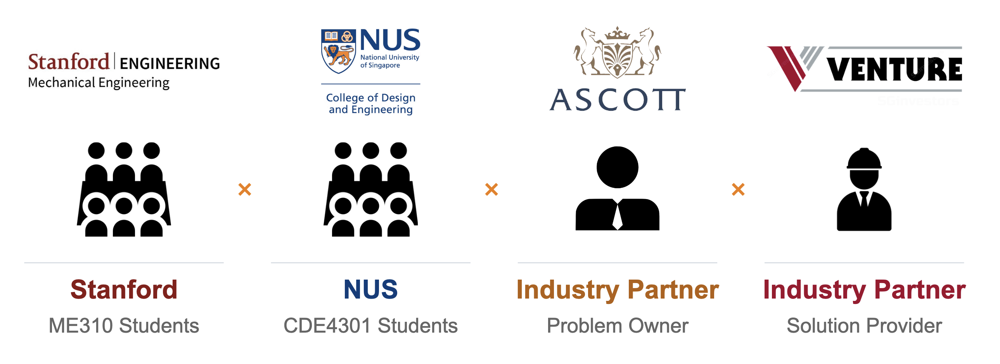
Project scope and objectives¶
The "arrival" process spans beyond the actual stay period. From pre-arrival forms to luggage handling to key issuance, and the set of "emerging technologies" that could be applied is wide. The team therefore narrowed the question to a focused problem space in Phase 1:
improving the check-in experience through better kiosk implementation.
Chapter 2 further explains the rationale behind this scoping.
Other scopes such as check-out process, customer services during the stay, mobile or fully contactless check-in, for instance, are outside the scope of Phase I, although the broader arrival experience returns as the focus of Phase II.
Overview¶
- Chapter 2 (Problem Statement): the original challenge, and the scope refinement for Phase 1
- Chapter 3 (Research and Problem Investigation): the Singapore hospitality landscape, stakeholders, and reviews existing kiosk technology, and kiosk industry landscape
- Chapter 4 (Fieldwork): our hotel observations and interviews, factors behind different efficacies of kiosk deployment
- Chapter 5 (Prototype Development): why we built an interactive kiosk-implementation playbook, and its structure
- Chapter 6 (Evaluation): validation and feedback from hotel managers, and the limitations of the current prototype.
- Chapter 7 (Conclusion): Phase I takeaways, and directions for Phase II.
2. Problem Statement¶
Refining the problem space¶
We were given a deliberately broad challenge:
How can we reimagine the hotel arrival experience with AI and Emerging Technologies?
Taken at face value, this question could lead almost anywhere: AI concierges, robotic porters, biometric room access, predictive pre-arrival services and more. For Phase I we narrowed it to:
How may we improve the check-in experience with better kiosk implementation in hotels?
The refinement was made in three steps, each tied to evidence from our preliminary research (Chapter 3) and fieldwork (Chapter 4).
1. From the whole arrival experience to check-in. Of the touchpoints in a hotel stay, check-in (together with check-out) is where we found the highest leverage. It is the moment where manpower pressure, regulatory duty and guest expectations meet. Identity verification is mandatory, it is repetitive, and it is bunched into peak windows that a discretely staffed front desk struggles to absorb.
2. From "AI and emerging technologies" to kiosks. Rather than survey every technology, we looked for the one that all stakeholders were already converging on. Guests want to skip queues, hotels are short of front-desk staff, STB and IMDA push and fund digital check-in, and 24 EVA-Ready vendors are recognised by STB to supply it. Kiosks are a proven technology in other industries and an established one in hotels. A solution built on them has a realistic path to adoption, and the open questions concern how well they are deployed.
3. From "kiosks" to "kiosk implementation". Our hotel visits and interviews showed that the technology alone does not determine success. Kiosk usage varied sharply between properties: utilisation across Ascott's properties averaged about 20% (with the best property at 40%, against a target of 70%), while The Ridge at NUS reached about 85% and became our benchmark. The difference could not be explained by the kiosk hardware alone. It also came from where the kiosk was placed, whether guests noticed and trusted it, how reliably it worked, whether staff had been trained to support it, and whether the hotel had thought through who its guests were. In other words, kiosk design is only one small factor in successful kiosk implementation. Redesigning a kiosk would therefore leave most of the gap unaddressed, so the problem we chose to solve is the implementation of the kiosk in its setting.
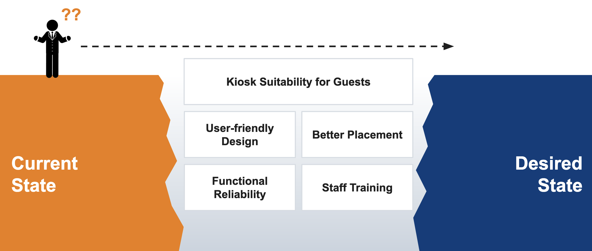
Scope of the refined problem¶
| Original challenge | Phase I problem statement | |
|---|---|---|
| Focus | The whole arrival experience | The check-in step |
| Technology | AI and emerging technologies, open-ended | Self-service kiosks |
| Core question | What could be reimagined? | What makes kiosk deployments succeed or fail? |
| Primary user | Not specified | Hotel managers and decision-makers |
The original challenge has not been abandoned. Phase II, run together with Stanford ME310, widens the scope again to reimagining the guest experience, building on the implementation principles established in Phase I.
3. Research and Problem Investigation¶
Singapore's hospitality landscape¶
Hotel sector overview¶
Singapore's hotel sector spans three broad segments: luxury (for example Raffles, Mandarin Oriental, Shangri-La and The Ritz-Carlton), mid-range (for example Novotel, Holiday Inn and Hilton Garden Inn, and serviced-residence brands such as Citadines, Somerset and Oakwood), and budget (for example lyf, Hotel 81 and ibis budget). Large groups such as The Ascott Limited operate brands across several of these tiers. The segments differ in guest profile, service expectations, margins and staffing models, so a solution that suits a luxury property is not automatically right for a budget one. This became a recurring consideration in how we framed our eventual prototype.
Despite these differences, every hotel delivers the same core service chain of pre-arrival, arrival, stay and departure:
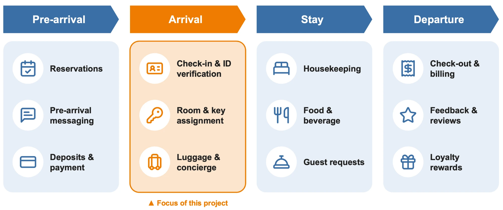
Our work focuses on arrivals, which is the first moment a guest interacts with the hotel in person. It is also the stage that combines the most routine, rule-bound tasks (verifying identity, collecting payment, issuing a key) in a single, time-pressured transaction at the front desk.
Defining a good hotel arrival experience¶
To establish a benchmark for a good hotel arrival experience, we referred to ISO 22483:2020, Tourism and Related Services — Hotels — Service Requirements. The standard outlines expectations for front desk operations and guest service, including clear reception signage, effective communication, prompt and courteous assistance, accessibility considerations, and security procedures. Collectively, these requirements suggest that a positive arrival experience extends beyond a quick check-in process; guests should also be able to obtain necessary information and receive appropriate assistance throughout their arrival.
These principles provide a reference point for evaluating the existing guest journey and identifying areas where the arrival experience could be improved, forming a foundation for our subsequent analysis of guest pain points and opportunities for improvement.
Tourism demand and manpower challenges¶
Rising demand¶
Global tourism has fully rebounded, with around 1.4 billion international tourist arrivals in 2024, or 99% of pre-pandemic levels (UN Tourism, 2025). According to the Singapore Tourism Board (STB, 2026c), Singapore welcomed 16.9 million visitors and a record S$32.8 billion in tourism receipts in 2025, and is targeting S$47–50 billion by 2040. For hotels, this growth means sustained pressure on front-of-house services such as check-in and check-out.
A shrinking labour supply¶
Labour supply has not kept pace. In June 2025, Singapore's accommodation sector had a job vacancy rate of 6.5%, more than double the economy-wide rate of 3.0%, rising to 8.4% for clerical, sales and service roles such as front-desk staff (Ministry of Manpower [MOM], 2025). Employers report that resident job seekers avoid hard-to-fill service roles because they find the work physically strenuous (42.9%), the hours long (39.1%) and the pay unattractive (37.4%) (MOM, 2026b). Low occupational status, limited recognition and verbal abuse from guests compound the problem (Cayla, 2023), and locals often remain uninterested even when wages rise (Seah, 2022).
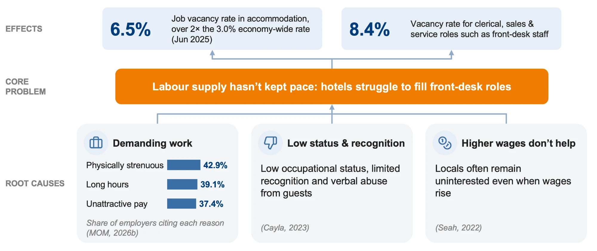
Foreign labour offers limited relief. The services-sector foreign-worker quota has been tightened from 50% to 35% of a firm's workforce (MOM, n.d.; Seah, 2022), and the minimum qualifying salary for new S Pass holders rises to S$3,600 from January 2027, with a further rise to around S$4,000–4,500 expected by 2030 (MOM, 2026a). Hotels are therefore hiring largely at entry level: about two-thirds of accommodation vacancies require one year of experience or less (MOM, 2026b), placing a heavy, recurring burden on training and service consistency.
A widening gap¶
Demand and labour supply are therefore moving in opposite directions. The World Travel & Tourism Council (WTTC, 2025) projects that by 2035 the global hospitality workforce will fall about 18%, or 8.6 million workers, short of requirements. Singapore is likely to feel this more acutely, as resident workforce growth is slowing and labour force participation is already high (MOM, 2025). Understaffed hotels face slower and less consistent service, which erodes guest satisfaction (Seah, 2022).
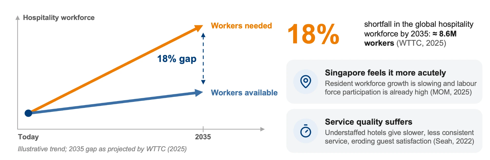
The global hospitality industry faces a structural workforce crisis that is likely to worsen, and Singapore, with its relatively expensive labour force, will be doubly affected. There is therefore a real and pressing need for solutions that ease this pressure, particularly at labour-intensive touchpoints such as the front desk.
Regulatory context for check-in¶
Check-in in Singapore is not only a service step but a regulated one. Hotels are required to verify the identity and permitted stay of international visitors. The Singapore Tourism Board (STB) provides the E-Visitor Authentication (EVA) system, an API designed to streamline the hotel check-in process (STB, 2026b) by automating verification of a visitor's stay validity against Immigration and Checkpoints Authority (ICA) records. In an EVA-enabled check-in flow, the passport is scanned and a live face capture is matched against the passport photo. Hotels without EVA must carry out this check manually.
This makes check-in a particularly strong candidate for automation in Singapore: the verification is mandatory, repetitive and rule-based, and it requires a physical presence at the property (a live face capture and a physical key), which means it cannot simply be replaced by a mobile app in the way that, for example, cinema ticketing has been.
Government and industry push¶
Government agencies are actively encouraging digital check-in:
- STB's EVA-Ready Programme lists 24 recognised vendors whose digital check-in solutions are compatible with EVA (STB, 2026b), and more than 70% of Singapore's hotel room stock has already adopted digital check-in/check-out solutions integrated with EVA (Yue, 2025).
- The Hotel Industry Digital Plan, introduced by IMDA and STB in 2019 and refreshed in 2025, pushes hotels to adopt five key technologies: smart rooms, robotics, digital concierge, digital check-in and check-out, and asset management systems (Yue, 2025).
- Funding support is available through STB's Business Improvement Fund, whose qualifying costs include hardware, equipment and software, with different levels of support for SMEs and non-SMEs (STB, 2026a).
Stakeholders¶
Four groups have a stake in how check-in is done, and their interests increasingly point in the same direction. The government certifies vendors and regulates and funds hotels; solution providers sell and integrate technology into hotels; and guests use that technology as part of their stay and service. Within hotels, owners and managers are distinct decision-makers.
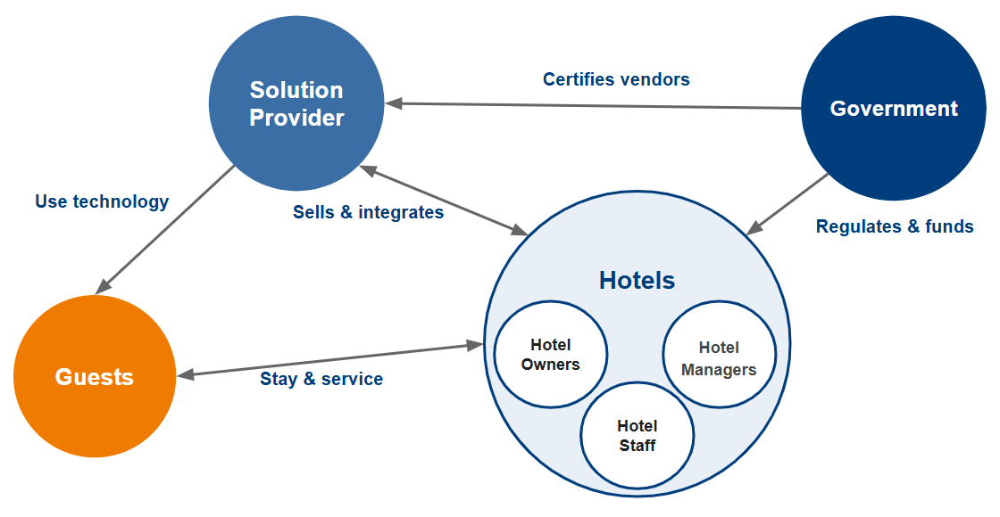
| Stakeholder | What they want | Relationship to kiosks |
|---|---|---|
| Guests | Skip queues, get the room card quickly, avoid repeated form-filling | Use the kiosk (or choose not to) |
| Hotels (owners and managers) | Cover 24/7 operations and peak hours despite a front-desk staff shortage; verify every guest; protect profit | Decide whether, where and how to deploy |
| Government (STB, IMDA) | Productivity and digital adoption in the sector | Regulate, certify vendors and fund adoption |
| Solution providers | Sell and integrate check-in solutions | Supply and maintain the hardware and software |
Why kiosks¶
Across the stakeholder map, one solution recurs: the self-service kiosk. Guests want to skip the queue; hotels are short of front-desk staff and need peak and round-the-clock cover; the government pushes and funds digital check-in; and a certified vendor market exists to supply it.
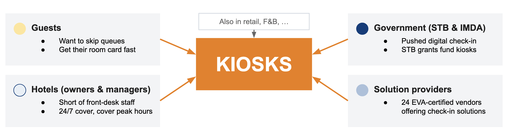
Kiosks also offer a targeted response to the manpower challenges described above. Front-desk staffing comes in whole units: a desk sized for peak arrivals is under-used for much of the day, while one sized for average demand is overwhelmed at peak. Arrival surges, such as an aircrew of 20–30 checking in at once, are a problem of concurrency rather than total volume, which parallel self-service stations are well suited to absorb. By standardising routine transactions, kiosks also reduce reliance on a largely entry-level workforce and free limited staff for interactions that benefit from a human touch.
Self-service has also delivered results in other industries. McDonald's reported higher average checks at its self-order kiosks, as customers browse the menu for longer, feel less pressure and tend to spend more (Wong, 2015). Changi Airport's passport-less immigration clearance, fully rolled out across all four terminals on 30 September 2024, cut average clearance time per traveller by 60%, from 25 seconds to 10 (Immigration & Checkpoints Authority [ICA], 2024). Uniqlo reports that its RFID self-checkouts reduce checkout waiting times by about 50% (FashionUnited, 2024).
Technology alone will not resolve the manpower crisis, and automation can make service work less visible and less valued (Cayla, 2023). We therefore position kiosks as a complement to front-line staff rather than a replacement.
The question that motivated our project, then, is not whether kiosks make sense for hotels, but a more difficult one: how well are they actually working, and what can we learn from the hotels that have already adopted them?
Understanding guest perspectives on self-service kiosks¶
Having established the case for kiosks from the perspective of hotel owners and managers, we turned to guests, whose uptake ultimately determines whether kiosks deliver their intended savings. In a study of 163 hotels, Lui and Piccoli (2010) found that kiosks improved financial performance only when guests used them successfully, and that failed self-service check-ins reduced guests' willingness to pay and to return.
Approach¶
Rather than surveying our own networks, which would not reflect the demographics of hotel guests, we adopted a netnographic approach, analysing unsolicited discussions in online travel communities (Kozinets, 2002). This gave us access to travellers of different ages, regions and travel purposes. We reviewed contributions from approximately 100 users across the Tripadvisor Business Travel forum (What Do You Think, n.d.), Australian Frequent Flyer (Mattg, 2024), Reddit's r/askhotels (Why Is It Hotel Self-Check-In Kiosk Not Popular, n.d.) and Singapore's HardwareZone forums (Genting FAQ, n.d.), and grouped recurring comments into six themes.
Because forum users are likely to be more tech-savvy and to travel more often than the average guest, and dissatisfied guests may be over-represented, we treat the findings as exploratory.
Findings¶
Theme 1: Reliability. Technical failure was the most common complaint. Users described frozen screens, bookings that could not be found, kiosks retaining passports, and keys that were not issued or did not work. One user vowed never to use a kiosk again, and two felt staff blamed them for the failure (What Do You Think, n.d.). Mobile check-in drew similar criticism, with guests forced to repeat the process at the desk (Mattg, 2024). This matches Meuter et al.'s (2000) finding that technology and process failures are leading causes of dissatisfaction with self-service technologies (SSTs).
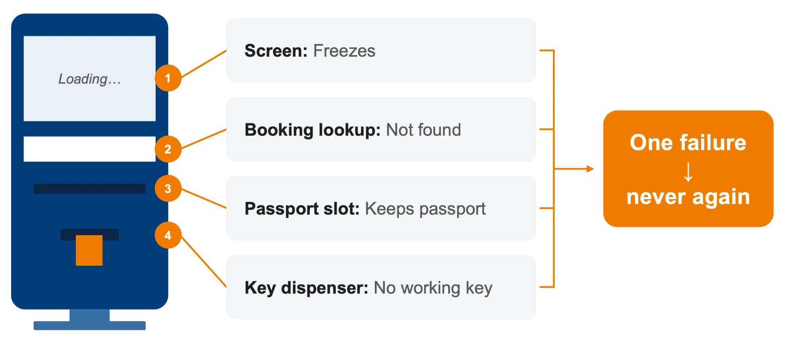
Theme 2: Recognition and human contact. Loyalty members reported that kiosks could not apply points or issue breakfast vouchers despite displaying their elite status, whereas staff could offer complimentary extras (Mattg, 2024). Guests also relied on the desk for questions about facilities and directions (Why Is It Hotel Self-Check-In Kiosk Not Popular, n.d.). Lui and Piccoli (2010) similarly found that guests continued to use the front desk for consultation, and a high "need for interaction" is known to reduce the appeal of self-service (Dabholkar & Bagozzi, 2002).
Theme 3: Segment and travel purpose. Support came mainly from frequent and business travellers keen to avoid "meaningless chitchats" with staff (What Do You Think, n.d.), while others expected upmarket hotels to offer both options so guests could choose according to their trip purpose (Mattg, 2024). Japan was often cited as a market where kiosks are already normal. This reflects the importance of compatibility with travellers' needs (Kim & Qu, 2014) and managers' view that SSTs suit business-oriented, non-luxury properties (Liu & Hung, 2021).
Theme 4: Privacy and identity verification. Some guests regarded facial capture at kiosks such as those at Swissôtel The Stamford as "a breach of privacy" (Mattg, 2024), while Genting's reliance on passport NFC chips forced some guests to queue for manual overrides (Genting FAQ, n.d.). Research on hotel guests in Singapore shows that privacy concerns heighten the perceived risk of facial recognition check-in (Boo & Chua, 2022), and that privacy influences trust more strongly than security does (Xu et al., 2021).
Theme 5: Mobile-first and hybrid journeys. Many contributors preferred app check-in with mobile keys to lobby kiosks (Why Is It Hotel Self-Check-In Kiosk Not Popular, n.d.). Suggested hybrids included using kiosks only to dispense keycards where doors lack mobile-key readers, and an express lane for guests who had checked in online. At Genting, guests used the app to reserve a room before arrival, reducing the kiosk step to under three minutes (Genting FAQ, n.d.). This supports treating kiosks as one channel within a complementary portfolio (Lui & Piccoli, 2010; Piccoli & Lui, 2014).
Theme 6: Usability anxiety and fairness. Some guests feared making mistakes or could not find their reservation number, whereas the desk needed only a passport (Why Is It Hotel Self-Check-In Kiosk Not Popular, n.d.). Others resented doing the hotel's work without any benefit to themselves, or worried about job losses (Mattg, 2024). These concerns reflect the discomfort and insecurity associated with lower technology readiness (Parasuraman, 2000) and the importance of ease of use in kiosk acceptance (Kim & Qu, 2014).
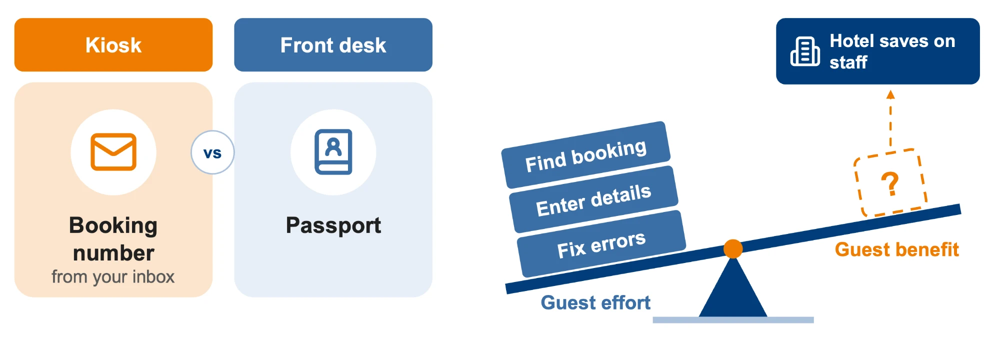
Summary of guest themes and design implications
| Theme | What guests reported | Implication for kiosk design |
|---|---|---|
| 1. Reliability and failure recovery | Non-working keys, frozen screens, bookings not found, kiosks retaining passports; guests made to feel at fault | Treat reliability as a prerequisite; provide a staffed fallback and a blame-free hand-off |
| 2. Recognition and human contact | Loyalty benefits and vouchers not applied; questions about rooms and facilities unanswered | Integrate loyalty data; keep staff available for questions and recognition |
| 3. Segment and travel purpose | Frequent and business travellers favour speed; leisure and luxury guests expect a choice | Match the kiosk's role to hotel positioning and guest mix |
| 4. Privacy and identity verification | Discomfort with facial capture; dependence on passport NFC chips | Explain data use clearly; offer non-biometric alternatives |
| 5. Mobile-first and hybrid journeys | Preference for app check-in and mobile keys, with the kiosk as key dispenser or fallback | Design the kiosk as one touchpoint in an end-to-end journey |
| 6. Usability anxiety and perceived fairness | Fear of making mistakes; lost reservation numbers; resentment at unrewarded "self-labour"; job concerns | Minimise required inputs; make the guest benefit explicit |
Key insights¶
Together, these findings carry five implications for kiosk design:
- Adoption is conditional. Guests rarely reject the concept, but a single failure can end their use, so reliability and blame-free recovery are prerequisites rather than operational details.
- Kiosks should complement the front desk, which retains roles in recognition and consultation.
- Receptiveness varies by segment, so deployment should reflect a property's positioning and guest mix.
- Kiosks work best as one touchpoint in a mobile-first journey that carries loyalty data through to arrival.
- Verification methods must be transparent, with non-biometric alternatives for guests who decline (Boo & Chua, 2022).
These guest-side findings echo what we observed on the ground (Chapter 4), where failed bookings, jammed key dispensers and unnoticed kiosks undermined adoption, and they informed the design principles in our playbook (Chapter 5).
4. Fieldwork and Key Findings¶
Hotel visits¶
As part of our ground work, we visited four hotels: Furama RiverFront, Citadines Science Park, Citadines Connect Rochester and The Ridge (NUS Hotel), and observed arriving guests' experience of the check-in kiosks. This was conducted over the course of about 3 months from Auguest to October 26.
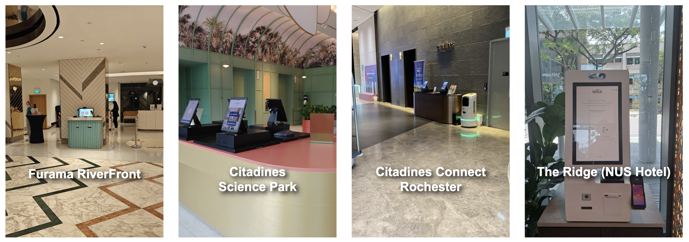
Below are our key observations from each hotel visited:
| Hotel | Observation |
|---|---|
| Furama RiverFront | Staff members were using kiosks instead of the guests themselves, which was equivalent to a traditional front-desk check-in. Families were observed to be waiting in line as well, meaning the kiosks had no added benefits and were not being used efficiently. |
| Citadines Science Park | Check-in kiosks were placed immediately in front of the entrance, while the front-desk was at a higher floor. One of the new guests checking in had a booking identification issue (a critical functional failure) and eventually went upstairs to check in at the front desk. |
| Citadines Connect Rochester | The kiosks were placed right next to the elevator due to port limitations, which was out of guests' immediate view upon entering the hotel. Furthermore, during a demonstration of the kiosk check-in, the key card dispensing had failed - this was identified as another pain point of the entire process. |
| The Ridge | Although placed against the entrance and not immediately visible to guests entering, staff members were trained to guide/escort the guests to the check-in kiosks. |
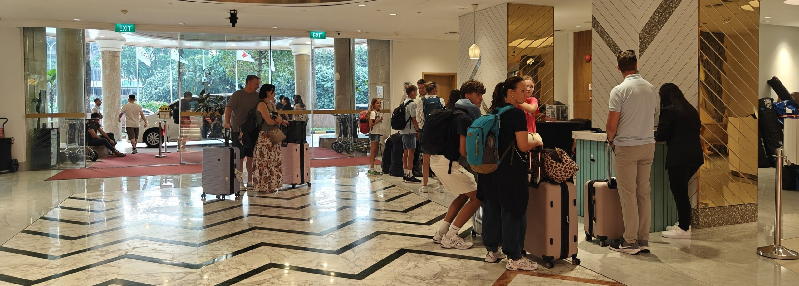
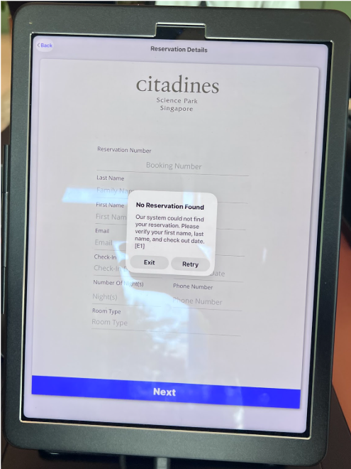
Interviews conducted¶
In addition to the visits, we conducted interviews with industry professionals from Ascott and The Ridge NUS to better understand the challenges of technology adoption in hotels.
Interview with Mr Michael Lee | Ascott¶
We interviewed Mr Michael Lee, Innovation and Digital Transformation Officer at Ascott, to understand the challenges surrounding self-service kiosk adoption and implementation across Ascott's properties.
Several key insights emerged from the interview:
| Key point | Details |
|---|---|
| Low Kiosk Adoption | Average kiosk utilisation was approximately 20%, with the best-performing property achieving 40%, against an aspirational target of 70%. This highlighted the gap between current performance and desired adoption levels. |
| Technical and Infrastructure Constraints | Issues involving facial recognition, keycard dispensing, and backend integration affected kiosk reliability. Physical constraints such as LAN connections and power outlets also limited placement flexibility, particularly in existing properties. |
| Guest Behaviour and Staff Involvement | Guest demographics and arrival patterns were identified as important considerations. Mr Lee also shared an example where staff actively encouraged kiosk usage, with the property reportedly achieving 70% kiosk utilisation for check-out, suggesting the potential importance of human assistance in driving adoption. |
| Financial and Implementation Considerations | Indicative costs of S$20,000 per kiosk and S$2,000 in annual maintenance, alongside infrastructure costs and the involvement of multiple decision-makers, highlighted the complexity of kiosk deployment. |
Interview with Mr Sherwin Poh | The Ridge NUS¶
We also interviewed Mr Sherwin Poh, Senior Manager (Operations) at The Ridge NUS, who shared insights into the hotel's adoption of self-service kiosks, digital check-in solutions, and service robots.
Key insights from the interview included:
| Key point | Details |
|---|---|
| Kiosk Design and Placement | Kiosk placement must accommodate guest queues without obstructing walkways, while providing sufficient privacy during check-in. Interface design was also important, with emphasis placed on minimising the number of steps required to complete the process. Along with other factors, this helped The Ridge achieve an 85% kiosk check-in rate. |
| Human Assistance | Staff assistance was also important, particularly when guests encountered difficulties with automated check-in. Mr Poh highlighted that to ensure staff were properly trained to work around kiosks, he would even conduct the training himself occassionally. |
| Pre-arrival Check-in | The hotel implemented online pre-arrival check-in, allowing guests to submit identification details and complete verification before arrival. Automated email reminders and pre-populated booking information helped streamline the subsequent on-site check-in process. |
| Technology Integration and Automation | The hotel utilised delivery, cleaning, and linen-handling robots integrated with systems such as lifts, doorbells, and RFID tracking. These examples highlighted the importance of coordinating multiple systems when introducing automation into hotel operations. |
Key Takeaways¶
Both interviews highlighted that successful technology adoption requires a holistic understanding of guest preferences, operational workflows, and implementation constraints.
Fieldwork summary¶
The fieldwork highlighted that successful kiosk adoption depends on more than the technology itself. Guest suitability, physical placement, staff involvement, and operational readiness all influence how effectively kiosks are used. These findings shaped our decision to develop an implementation playbook, with the next chapter outlining how we translated these insights into its requirements, structure, and interactive features.
5. Prototype Development¶
Playbook rationale and structure¶
Why a playbook, and not a better kiosk¶
Our hotel visits (Chapter 4) surfaced six recurring problems with kiosks in practice: basic functionality (passport scan errors, bookings that fail to link, payment failures, jammed or missing key cards), clunky UI/UX, cabling, poor positioning, difficulty handling large tasks such as multi-room bookings, and a lingering demand for human touch. The natural reaction would be to design a better kiosk. We chose not to, for three reasons:
- Kiosk design is a minor factor. The gap between Ascott's average kiosk utilisation of about 20% and The Ridge's 85% was driven largely by factors outside the machine: placement, visibility, staff training, guest fit and reliability. A better kiosk would leave most of that gap untouched.
- Fixing one pain point is not enough. A tool that rectified a single hotel's current problem would not prevent the next manager from making different mistakes. We would need to address every pain point, across properties that serve very different guests.
- Hotels differ. Luxury, mid-range and budget hotels, and hotels with different guest mixes, face different trade-offs. The valuable thing to hand over was not a single answer but a way of reaching the right answer for each property.
Our answer was therefore not to build the best kiosk in the world, but to help managers understand how to implement kiosks well: the strategy behind them, how they are operated, and what to do and avoid.
Reviewing other's playbooks¶
Before planning our prototype, we reviewed existing kiosk implementation guides, including the Singapore Tourism Board's (STB) Best Practices in Implementing Self Check-in Solutions and Cammax's A Bite-Sized Guide to Kiosk Deployment.
The STB guide provides hospitality-specific recommendations across the guest journey, covering aspects such as interface design, kiosk visibility, and staff guidance (Singapore Tourism Board, 2024). Meanwhile, Cammax offers broader considerations for kiosk deployment, including hardware selection, software, placement, and maintenance (Cammax, n.d.).
While both provide valuable guidance, their static formats offer limited support for tailoring recommendations to individual hotel contexts. Managers must independently interpret the recommendations and assess their applicability to their property's guest demographics, operational needs, and financial constraints.
This highlighted an opportunity to develop a more interactive and personalised decision-support tool, allowing managers to apply established principles to their own hotel circumstances rather than relying solely on general recommendations.
Deciding the form of the prototype¶
We began by asking two questions: How do we help hotels make better decisions during kiosk implementation? and How do we create a guide that helps them handle the nuances of integrating a kiosk, not just designing one? From these, we set out the requirements for the prototype, also incorporating the established guidance provided by STB and Cammax's playbooks.
- Audience. The primary reader is the hotel manager responsible for the decision, but consultants and kiosk vendors are also likely users, so the content has to work for all three.
- Guided, not just informative. Managers are often unsure or unaware of what they actually want from a kiosk (e.g. lower manpower cost? smoother arrival? a more innovative brand?). The first job of the prototype is to help them clarify their objective, with later content adapting to it.
- Interactive and personalised. Each stage should include an activity or template for the reader to complete, such as a guest persona or goal-setting exercise, with the reader's own values driving the results. This helps them move from theory to action.
- Covers the full journey. It should address strategy, design and execution so that no stage is left unsupported, and should include a cost-benefit analysis so managers can build a financial case for their owners.
- Usable beyond the session. Completed work should be exportable so that managers can take it into discussions with owners, vendors or funding agencies.
A static report or checklist would meet only the first of these. An interactive web-based playbook for the manager would meet all of them, which is why we chose it as the Phase I prototype.
Structure: Strategy, Design, Execution¶
The playbook follows three stages, mirroring how a hotel moves from deciding on a kiosk to running one:
| Stage | Question it answers | What the manager does |
|---|---|---|
| Strategy | Are kiosks the appropriate solution, and what do we want from it? |
|
| Design | What should the kiosk and its setting look like? |
|
| Execution | How do we deploy and run it? | Identify work to be done in four workstreams:
|
The playbook concludes with a cost-benefit analysis, allowing the manager to make a quick comparison of the quantitative and qualitative benefits they stand to gain against the investment required for kiosk implementation.
Interactive implementation playbook¶
Explore the playbook below, or open the standalone playbook in a new tab for more space.
Use the playbook's own menu and Previous/Next buttons to navigate its slides. The report continues below.
Playbook deployment¶
The playbook will be hosted online as a website, allowing hotel managers to access and utilise its interactive tools conveniently. Given the sensitivity of guest and financial data, user inputs will not be stored on the website to safeguard data privacy. Instead, users will be able to download a copy of the completed playbook, including their inputs and calculated results, for future reference and decision-making.
6. Evaluation¶
Feedback and validation¶
Building on the content from STB and Cammax, we believe our playbook gone beyond existing guides by incorporating interactive and personalised decision-support tools. Beyond presenting best practices, the playbook enables hotel managers to apply these recommendations to their specific contexts, facilitating more informed implementation decisions.
To evaluate the playbook's practical relevance and usability, we sought feedback from industry professionals at The Ridge NUS and Ascott. Their feedback provided insights into the playbook's potential applications, strengths, and areas for improvement.
Feedback from The Ridge NUS¶
We sought feedback from Mr Sherwin Poh, who responded positively to the playbook, highlighting its potential to guide hotel operators towards more comprehensive and informed decisions during kiosk implementation.
"[The playbook's] great, I would have used it as a guide to make more informed considerations when planning as there may have been things I didn't think about."
~ Mr Sherwin Poh, Senior Manager (Operations), The Ridge NUS
Mr Poh highlighted several features that could support hotel operators throughout the planning process.
-
The Kiosk Suitability Assessment provides a structured evaluation of whether self-service kiosks are appropriate for a hotel. He noted that the resulting suitability rating could help operators justify their recommendations and secure buy-in from senior management.
-
The Kiosk Placement Tool allows operators to visualise guest flow and compare different kiosk locations. This could facilitate more informed placement decisions by helping operators assess alternative lobby configurations.
-
The Cost-Benefit Calculator provides an initial financial assessment of kiosk implementation. Mr Poh noted that this could be particularly useful in supporting applications for Singapore Tourism Board (STB) grants.
Feedback from Ascott¶
We also sought feedback from Mr Michael Lee, who expressed appreciation for the playbook and his intention to share it with Ascott's building managers. More specifically, he commented about the following:
-
The Design Principles section is a particularly useful component of the playbook to guide kiosk design decisions. It is valuable and helps put together kiosk design considerations.
-
The Cost-Benefit Analysis is helpful for managers like himself. To push this tool further, it could be integrated with Ascott's existing databases on Power BI. Financial evaluations drawing directly from operational data provides further value add in reducing the need for manual inputs.
-
One area for improvement was the User Persona Development section. Mr Lee noted that it was not intuitively clear that the personas were intended to adaptively represent any hotel's most common guest archetypes according to guest data.
-
The playbook has since been tweaked to reflect an overall guest composition chart that leads to a composite kiosk propensity score for the establishment, as seen in
screen 14of the embedded prototype above.
Overall Takeaways¶
The feedback from both hotel managers were encouraging, highlighting the playbook's potential to support other hotel managers make informed decisions for effective kiosk implementations. Most notably, the design principles, placement visualisation, and financial evaluation tools were identified as valuable components.
The feedback also revealed opportunities to improve the playbook's clarity and integration with existing hotel systems, providing useful directions for future refinement.
A Good Hotel Arrival Experience¶
In Chapter 3, criteria for a good arrival experience were established with reference to ISO 22483:2020. Beyond a quick check-in, guests should be able to find their way, understand the process at a glance, and receive help whenever needed. A kiosk can speed up the check-in, but it has to be deployed thoughtfully.
The playbook is designed to improve the arrival experience according to the criteria set:
| Criteria for a good arrival experience | How the playbook supports this criteria |
|---|---|
| Clear reception signage | Placement principles call for signage that makes kiosk use and eligibility clear, and the Kiosk Placement Tool rates locations on visibility. |
| Effective communication | UI/UX principles favour scanning over typing, and the kiosk is configured for guests' languages. |
| Prompt, courteous assistance | The Kiosk Suitability Assessment recommends staff nearby, or the counter, when the guest mix needs it. Execution covers staff training and hand-offs from kiosk to staff. |
| Accessibility | Inclusive design principles cover height, reach and font size, and the Kiosk Placement Tool rates accessibility. |
| Security procedures | Security and privacy principles, such as privacy screens and keeping personal details off the display. |
This alignment is by design. The playbook considers fundamental principles to guide considerations for hotel managers at each step of the kiosk implementation beyond the kiosk hardware purchase.
Areas for Improvement¶
While the playbook provides a structured approach to kiosk implementation, several limitations remain. We have identified some key limitations and will look into addressing them even as we transition to phase II.
1. Kiosk Suitability Assessment Weightages¶
A guest's propensity for kiosk adoption is most likely influenced by varying weights of the identified guest attributes, but these weights have not been empirically tuned. Due to limited access to hotel-specific guest data, we currently assign equal weights to the guest attributes used in evaluating their likelihood of rejecting or accepting kiosk check-ins.
Further data collection and analysis of guest data would be required to refine the weighting system and improve the accuracy of suitability assessments. Mr Lee has given an update that he has almost completed his process in consolidating a dataset of de-identified guest data with the requested attribute fields. Model and parameter training can begin when this dataset is shared, for us to develop a kiosk suitability model grounded on real numbers.
2. Kiosk Placement Tool Evaluation is Subjective¶
The Kiosk Placement Tool currently evaluates potential kiosk locations using a set of criteria and scoring logic developed by the team. While these are based on reasonable design considerations, the thresholds and ratings remain partly subjective and do not fully capture complexities of actual hotel environments yet.
We will look into consulting interior designers and experienced hotel managers to help validate the evaluation criteria, identify any overlooked considerations, and improve the tool's applicability across different lobby layouts and operational contexts.
3. Scope of the Execution Framework¶
The Execution section was developed based on initial fieldwork, conversations with hotel staff, and secondary research. While the four identified workstreams cover key aspects of kiosk implementation, they may not be exhaustive. Certain critical activities or finer operational details may have been overlooked.
We aim to obtain further input from hotel managers with experience in technology adoption and implementation to further validate the framework's completeness and refining the guidance within each workstream.
7. Conclusion and Next Steps¶
Phase I Achievements¶
Phase I focused on understanding the challenges surrounding hotel self-service kiosk adoption and developing a structured approach to improving kiosk implementation.
Through industry research, fieldwork, and engagement with hotel stakeholders, we gained valuable insights into hotel operations, guest journeys, and the factors influencing technology adoption. These findings informed the development of an interactive playbook that guides hotel operators through the three stages: Strategy, Design, and Execution.
The playbook consolidates our research into a practical decision-support resource, enabling hotel managers to evaluate kiosk suitability, explore placement options, assess financial feasibility, and plan implementation. Positive feedback from industry professionals further highlighted its potential value in supporting more informed planning decisions.
Transitioning from Phase I to Phase II¶
While Phase I focused on improving kiosk implementation, Phase II will adopt a broader objective of reimagining the hotel guest experience through emerging technologies. This next phase will be structured around three sprints, aligned with the Stanford ME310 programme timeline, as illustrated below.
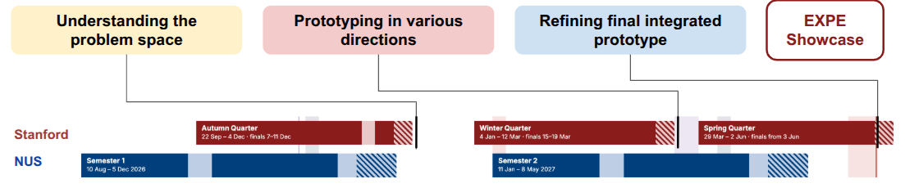
The three sprints will focus on:
- Understanding the Problem Space: Identifying key challenges and opportunities within the broader hotel guest experience.
- Prototyping in Various Directions: Exploring and testing different solution concepts to address the identified problems.
- Refining the Final Integrated Prototype: Consolidating findings and refining the most promising concepts into an integrated solution for the EXPE Showcase.
Importantly, Phase II will build upon the work completed in Phase I rather than starting from scratch. As illustrated below, two key outcomes from Phase I will contribute to the next phase.
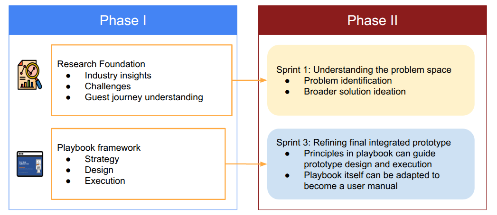
Firstly, the research foundation established in Phase I, particularly our understanding of the hospitality industry, its operational challenges, and the guest journey, will support the first sprint. These insights provide a starting point for identifying underlying problems and exploring opportunities for innovation beyond self-service kiosks.
Secondly, the playbook framework developed in Phase I can support the refinement and eventual deployment of the final solution in Sprint 3. Its principles across Strategy, Design, and Execution can guide considerations surrounding technology suitability, user experience, and implementation planning. Furthermore, the playbook itself could be adapted and expanded beyond kiosks to serve as a user manual or implementation guide for the eventual solution.
Ultimately, Phase I establishes both a research foundation and a practical implementation framework for Phase II. By building upon these achievements, the project can progress from improving existing kiosk implementations towards developing a more integrated solution that enhances the broader hotel guest experience.
References and Appendices¶
References¶
Boo, H. C., & Chua, B.-L. (2022). An integrative model of facial recognition check-in technology adoption intention: The perspective of hotel guests in Singapore. International Journal of Contemporary Hospitality Management, 34(11), 4052–4079. https://doi.org/10.1108/IJCHM-12-2021-1471
Cammax Limited. (n.d.). A bite-sized guide to kiosk deployment.
Cayla, J. (2023, October 3). Services staff are humans, too – and customers need to understand this. The Straits Times. https://www.straitstimes.com/opinion/service-staff-are-humans-too-and-customers-need-to-understand-this
Dabholkar, P. A., & Bagozzi, R. P. (2002). An attitudinal model of technology-based self-service: Moderating effects of consumer traits and situational factors. Journal of the Academy of Marketing Science, 30(3), 184–201. https://doi.org/10.1177/0092070302303001
FashionUnited. (2024). Is RFID the solution to the obstacles in retail's self-scanning checkouts? FashionUnited. https://fashionunited.uk/news/retail/is-rfid-the-solution-to-the-obstacles-in-retail-s-self-scanning-checkouts/2024033174881
Genting FAQ – Part 3 [Online forum thread]. (n.d.). HardwareZone Forums. https://forums.hardwarezone.com.sg/threads/genting-faq-part-3.5963352/page-775
Immigration & Checkpoints Authority. (2024, October 24). Passport-less clearance fully rolled out at Changi Airport [Media release]. https://www.ica.gov.sg/news-and-publications/newsroom/media-release/passport-less-clearance-fully-rolled-out-at-changi-airport
International Organization for Standardization. (2020). Tourism and related services — Hotels — Service requirements (ISO Standard No. 22483:2020). https://www.iso.org/standard/73315.html
Kim, M., & Qu, H. (2014). Travelers' behavioral intention toward hotel self-service kiosks usage. International Journal of Contemporary Hospitality Management, 26(2), 225–245. https://doi.org/10.1108/IJCHM-09-2012-0165
Kozinets, R. V. (2002). The field behind the screen: Using netnography for marketing research in online communities. Journal of Marketing Research, 39(1), 61–72. https://doi.org/10.1509/jmkr.39.1.61.18935
Liu, C., & Hung, K. (2021). A multilevel study on preferences for self-service technology versus human staff: Insights from hotels in China. International Journal of Hospitality Management, 94, Article 102870. https://doi.org/10.1016/j.ijhm.2021.102870
Lui, T.-W., & Piccoli, G. (2010). Integrating self-service kiosks in a customer-service system (Cornell Hospitality Report). Cornell University, Center for Hospitality Research. https://hdl.handle.net/1813/71084
Mattg. (2024, August 8). Checking in to a hotel at a self-service kiosk? [Online forum post]. Australian Frequent Flyer. https://www.australianfrequentflyer.com.au/community/threads/checking-in-to-a-hotel-at-a-self-service-kiosk.114904/
Meuter, M. L., Ostrom, A. L., Roundtree, R. I., & Bitner, M. J. (2000). Self-service technologies: Understanding customer satisfaction with technology-based service encounters. Journal of Marketing, 64(3), 50–64. https://doi.org/10.1509/jmkg.64.3.50.18024
Ministry of Manpower. (n.d.). Services sector requirements. Retrieved November 13, 2026, from https://mom.gov.sg/passes-and-permits/work-permit-for-foreign-worker/sector-specific-rules/services-sector-requirements
Ministry of Manpower. (2025). Labour market report: Second quarter 2025. https://stats.mom.gov.sg/iMAS_PdfLibrary/mrsd-Labour-Market-Report-2Q-2025.pdf
Ministry of Manpower. (2026a, March 3). Factsheet on foreign workforce policies [Fact sheet]. https://www.mom.gov.sg/-/media/mom/documents/press-releases/2026/factsheet-on-foreign-workforce-policies-03032026.pdf
Ministry of Manpower. (2026b). Job vacancies 2025. https://stats.mom.gov.sg/iMAS_PdfLibrary/mrsd_JV2025.pdf
Parasuraman, A. (2000). Technology Readiness Index (TRI): A multiple-item scale to measure readiness to embrace new technologies. Journal of Service Research, 2(4), 307–320. https://doi.org/10.1177/109467050024001
Piccoli, G., & Lui, T.-W. (2014). The competitive impact of information technology: Can commodity IT contribute to competitive performance? European Journal of Information Systems, 23(6), 616–628. https://doi.org/10.1057/ejis.2013.20
Seah, K. (2022, July 23). Commentary: Raise salaries to attract more locals to hospitality and F&B? It's not so simple. CNA. https://www.channelnewsasia.com/commentary/hotel-restaurant-long-wait-labour-shortage-foreign-worker-jobs-2828971
Singapore Tourism Board. (2024). Best practices in implementing self check-in solutions (Version 1.0).
Singapore Tourism Board. (2026a). Business Improvement Fund (BIF). Retrieved November 13, 2026, from https://www.stb.gov.sg/licensing-support/grants/business-improvement-fund/
Singapore Tourism Board. (2026b). E-Visitor Authentication Ready Programme. Retrieved November 13, 2026, from https://www.stb.gov.sg/licensing-support/assistance-programmes/e-visitor-authentication-ready-programme-/
Singapore Tourism Board. (2026c, May 8). Speech by Ms Melissa Ow, chief executive, Singapore Tourism Board, at the Tourism Industry Conference 2026 [Speech transcript]. https://www.stb.gov.sg/about-stb/media-publications/speeches/speech-by-ms-melissa-ow--chief-executive--singapore-tourism-board--at-the-tourism-industry-conference-2026/
UN Tourism. (2025, January 21). International tourism recovers pre-pandemic levels in 2024 [Press release]. https://www.untourism.int/news/international-tourism-recovers-pre-pandemic-levels-in-2024
What do you think of hotel self check-in machines? [Online forum post]. (n.d.). Tripadvisor. https://www.tripadvisor.com.sg/ShowTopic-g1-i12407-k10011416-What_do_you_think_of_hotel_self_check_in_machines-Business_Travel.html
Why is it hotel self-check-in kiosk not popular? [Online forum post]. (n.d.). Reddit. https://www.reddit.com/r/askhotels/comments/12tr6j7/why_is_it_hotel_selfcheckin_kiosk_not_popular/
Wong, V. (2015, July 28). America, meet McDonald's self-service kiosks. BuzzFeed News. https://www.buzzfeednews.com/article/venessawong/heres-how-mcdonalds-kiosk-works
World Travel & Tourism Council. (2025, September 30). WTTC report shows travel & tourism set to support 91MN new jobs by 2035 [Press release]. https://wttc.org/news/wttc-report-shows-travel-and-tourism-set-to-support-91mn-new-jobs-by-2035
Xu, F. Z., Zhang, Y., Zhang, T., & Wang, J. (2021). Facial recognition check-in services at hotels. Journal of Hospitality Marketing & Management, 30(3), 373–393. https://doi.org/10.1080/19368623.2020.1813670
Yue, K. (2025, September 2). Singapore's Hotel Industry Digital Plan gets updated to keep up with times. TTG Asia. https://www.ttgasia.com/2025/09/02/singapores-hotel-industry-digital-plan-gets-updated-to-keep-up-with-times/
Appendices¶
Appendix A: Fieldwork Report Template¶
We conducted our hotel visits through fly-on-the-wall observation by hanging around hotel lobbies and check-in areas to observe procedures, guest reactions and the overall movement from arrival until the guests went off to their rooms. To aid in collecting our findings, we used the template below:
Hotel Background
| Point | Details |
|---|---|
| Owner | Name of organization |
| Stars | 1 to 5 stars |
| Tier/branding | Luxury, mid-range or budget |
| Unique selling point | Any notable special points of the hotel |
| Relevant innnovations | Any novel use of technology |
Hotel Observations
| Stage | Observation | Inference | Opportunities and lessons |
|---|---|---|---|
| General ambience | |||
| Arrival | |||
| Waiting | |||
| Check-in | |||
| Post check-in | |||
| Others |